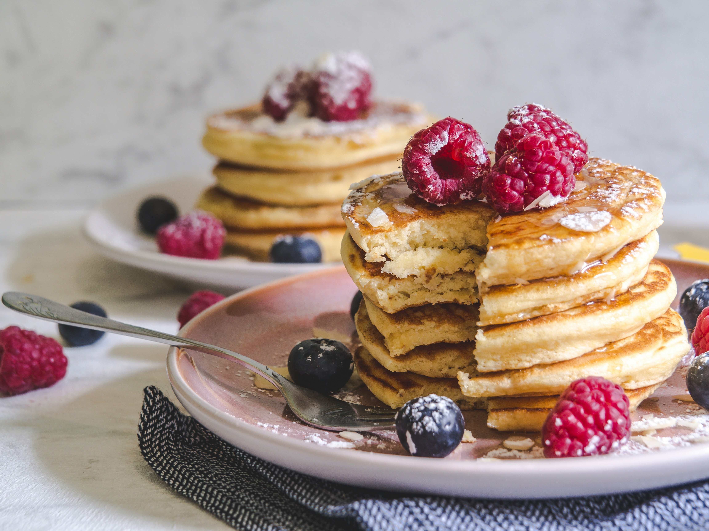

Home
Pancakes

Description
This easy recipe only needs 5 ingredients and can be made in less than 15
minutes.
Ingredients
Instructions
Mix dry ingredients together in a large bowl.
Mix wet ingredients together in a small bowl.
Fold ingredients together until just combined, leaving some small lumps.
Heat skillet with butter.
Pour 5" rounds of batter into the skillet and cook for 2 minutes on each
side.